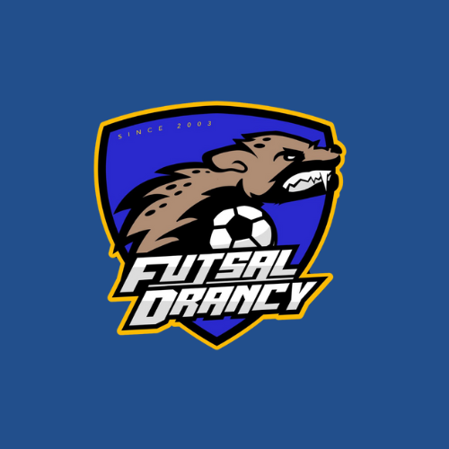
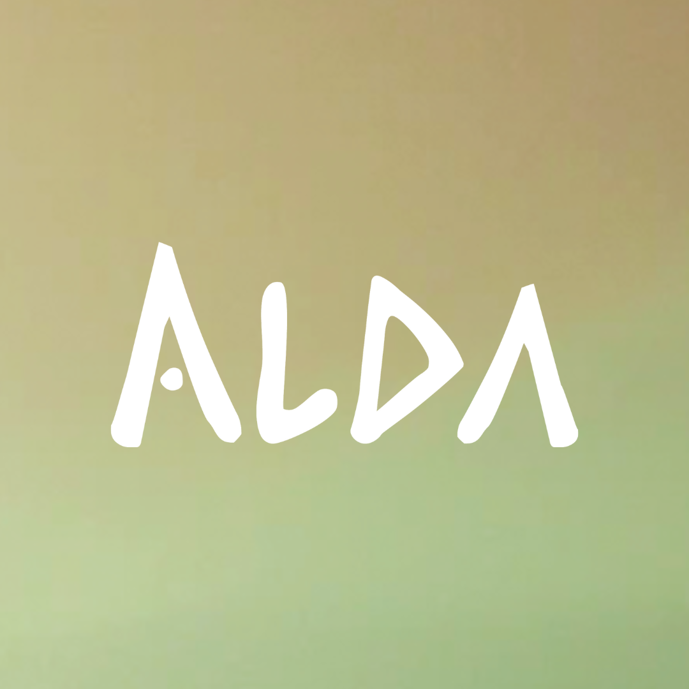
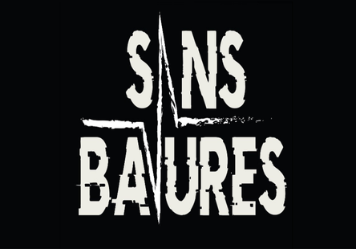
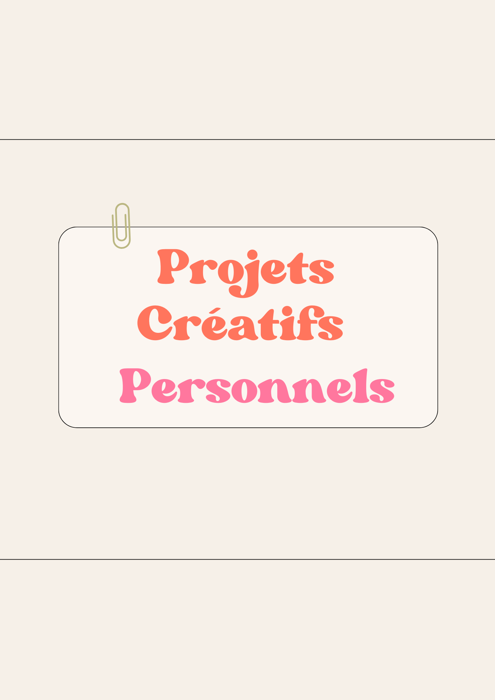

Mon travail
Double-clique sur un projet pour découvrir tous les détails et les photos.
Expérience professionnelle

Création de supports visuels, gestion des réseaux sociaux et communication événementielle.
Formation
Affiches et mockups conçus avec Illustrator et Photoshop au Lycée Jacques Brel.
BUT MMI · IUT Sénart-Fontainebleau

Création d'une marque de bière artisanale — identité visuelle, site web et animations.

Association fictive contre les abus policiers — identité visuelle et stratégie de communication.
Hors cursus

Posters cinéma sud-indien, illustrations et vidéo Terra Scientifica réalisés avec Photoshop.